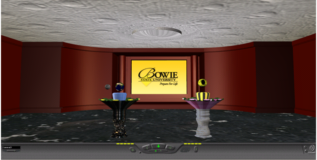
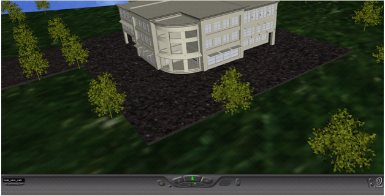
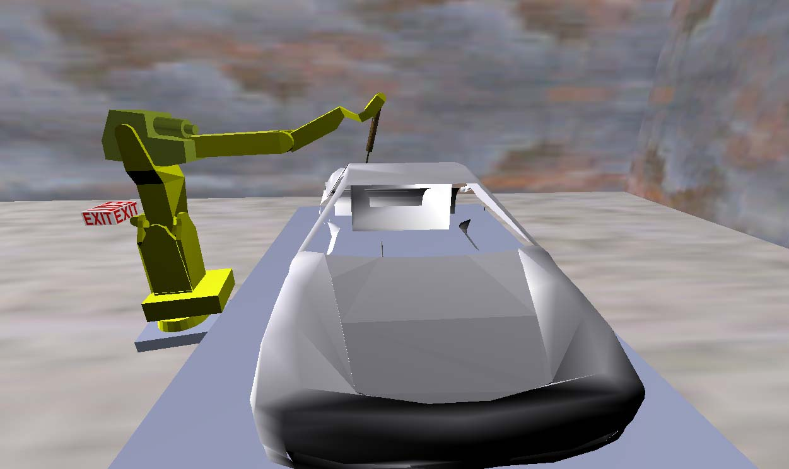

| 1. Virtual Children’s Museum |
By: Tyreek Edward, Emily Mudede, Bette Donahue, Daryl Davis |
 |
Virtual Children’s Museum: The goal of the project is to Create a Virtual Museum that will:
- Allow users to explore various rooms
- Play with various objects and games
- View various real-world objects
The museum has the following rooms
- Kid’s Room
- Obstacle Course
- Treasure Hunting Room
- 3D Maze
Click Here to VIEW THE VRML PROJECT
Click Here to VIEW THE LOBBY
|
 |
 |
 |
 |
|
|
|
|
| 2. Virtual Museum for Animal World |
By: Patrick Asata, , Akinseyi Famoyegun, and James Davidson |
|  |
The objective of our project was to create a virtual museum
which contains two exhibits. The first exhibit will
display a prehistoric era consisting in dinosaurs
in a natural habitat. The second exhibit displays our solar
system including the sun and the nine planets ( we
still consider pluto to be a planet) . Each exhibit will
also contain information about the environments.
Click Here to VIEW THE VRML PROJECT
|
|  |
 |
|
|
| |
|
| 3. Virtual
Reality Manufacturing Museum as a Tool for Learning and Navigation |
 |
The ability of Virtual Reality (VR) to
explain the principles of design, manufacturing and business
far surpasses that of books. Virtual environments (VE) provide
facility for experiential learning by allowing the students
to explore the VE at their own pace and interact in real time.
Game creation is used as a metaphor for early design education.
The VRML Museum project was conceived with the interest of
informing the public about the evolution of current manufacturing
systems. The primary objective of this project is to create
a museum exhibit that will educate and increase awareness
of the progress of manufacturing. The project’s goals
are to educate participants about manufacturing, expose them
to the computer/technology advancements that have occurred. |
|
|
 |
 |

{kind=link}
{kind=link}
{kind=link}
{kind=link}